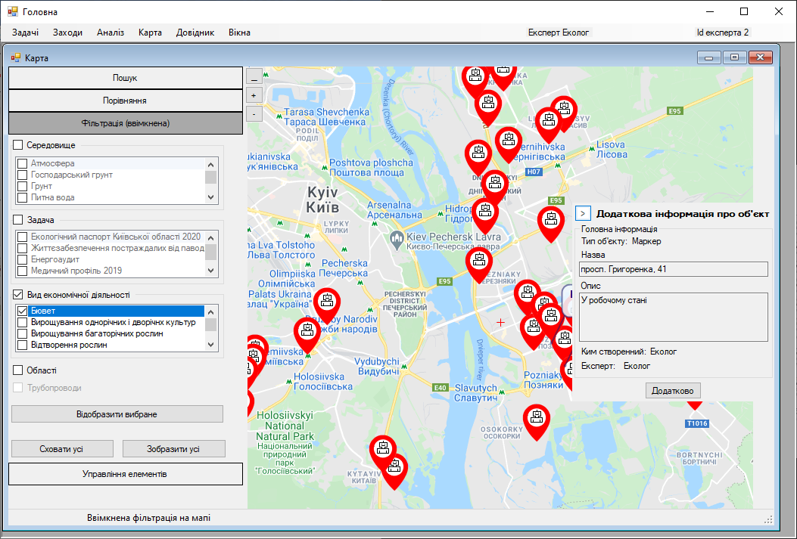
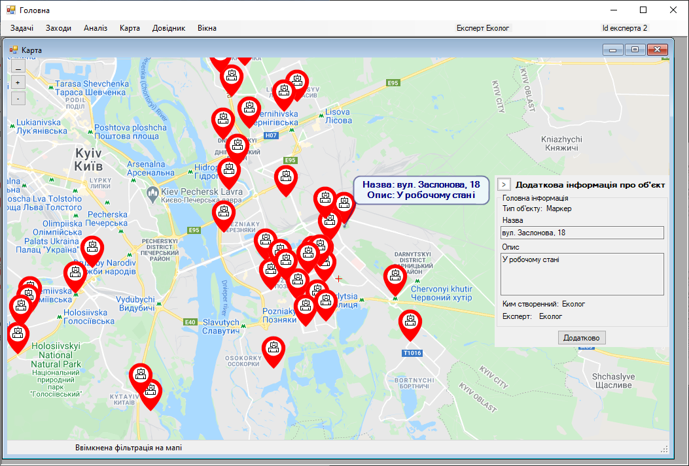

Крок 14. Закриття контекстного вікна додаткової інформації про маркер
Експерт натискає кнопку стрілочки вправо на контекстному вікні, щоб його закрити.
Або ж заповнює контекстне вікно додатковою інформацією іншого маркера, обравши інший маркер.
